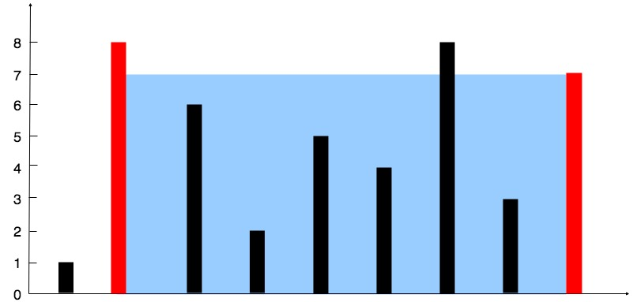

11. 盛最多水的容器
双指针从两端夹逼：容量由短板决定，每次算完面积就移动短板那一侧，直到两指针相遇。
思路
- 容量 =
min(h[left], h[right]) × (right - left)；先把当前这对算进答案，再动指针。 - 只动短板：宽度必然在缩小，若动长板，高度仍被短板卡住，容量只会更小；动短板才可能换到更高的板。
- 相等时动哪边都行，不影响正确性。
- 每步淘汰一个下标，两指针共走 n-1 步，O(n)。
图解
最优解
1class Solution {2 public int maxArea(int[] height) {3 int ans = 0;4 int left = 0, right = height.length - 1;5 // 两端夹逼：容量 = 短板高度 × 宽度，先算再动指针6 while (left < right) {7 int area = Math.min(height[left], height[right]) * (right - left);8 ans = Math.max(ans, area);9 // 宽度已在缩小，只有挪动短板才可能变得更高；动长板只会更差10 if (height[left] < height[right]) left++;11 else right--;12 }13 return ans;14 }15}题目
给定一个长度为 n 的整数数组 height 。有 n 条垂线，第 i 条线的两个端点是 (i, 0) 和 (i, height[i]) 。
找出其中的两条线，使得它们与 x 轴共同构成的容器可以容纳最多的水。
返回容器可以储存的最大水量。
说明：你不能倾斜容器。
示例 1：

输入：[1,8,6,2,5,4,8,3,7] 输出：49 解释：图中垂直线代表输入数组 [1,8,6,2,5,4,8,3,7]。在此情况下，容器能够容纳水（表示为蓝色部分）的最大值为 49。
示例 2：
输入：height = [1,1] 输出：1
提示：
n == height.length2 <= n <= 1050 <= height[i] <= 104
题面取自力扣当前版本。
数据快照 2026-11-04。题面版权归力扣所有，本站点仅供本人学习使用，请勿对外发布。